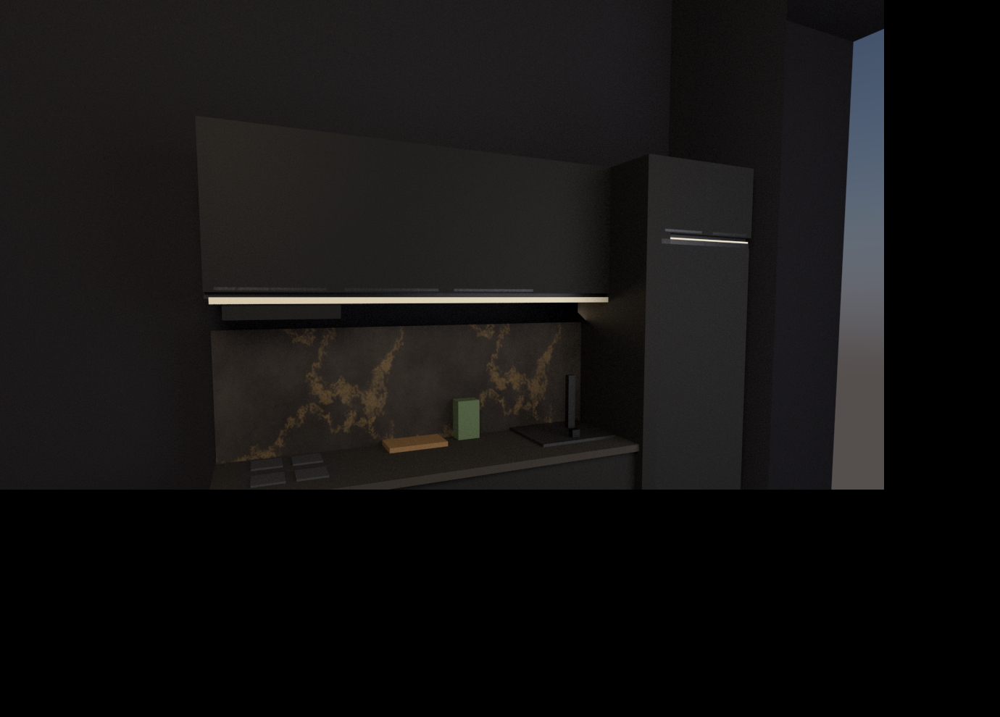

✓ O "branco" foi resolvido. Era o material ph_filler (lateral cream da torre da geladeira) que ficava FORA da lista do tema black_wood_gold. Agora a coluna é preta coesa. Zero branco chapado.

Variante B aplica:
armário preto foscobacksplash dark-gold CONTROLADO
geladeira preto fosco (matte, antidigital)piso cimento médio
paredes/teto escuros (fechado, sem céu)LED 2700K quente
Agora a cozinha tem chão, paredes e nada estourado branco — eye-level, tipo foto.
Falta tunar brilho/contraste e renderizar A (golden atual) e C (stress nero-gold) pra matriz comparativa.